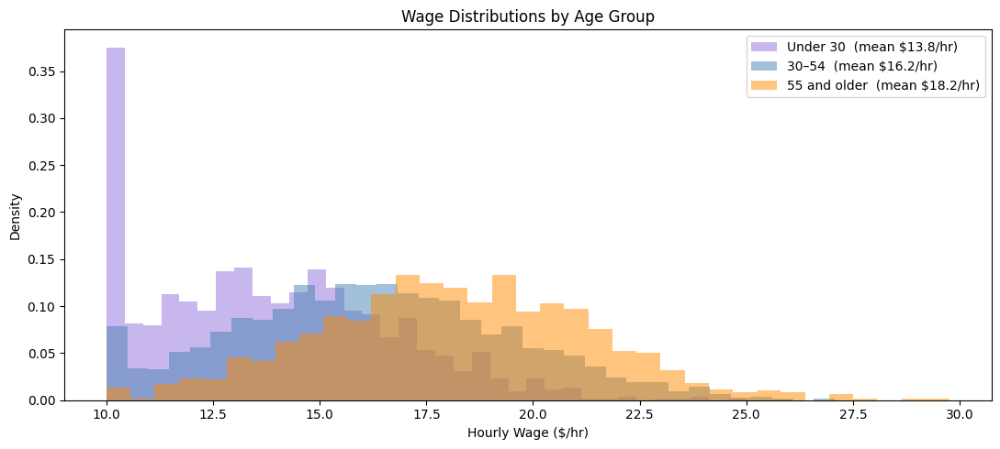
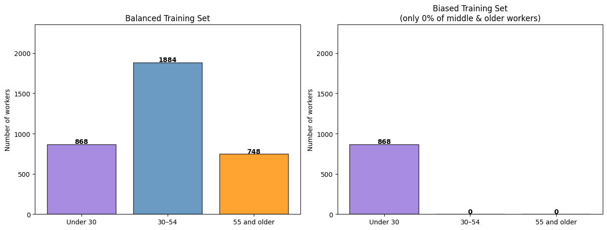
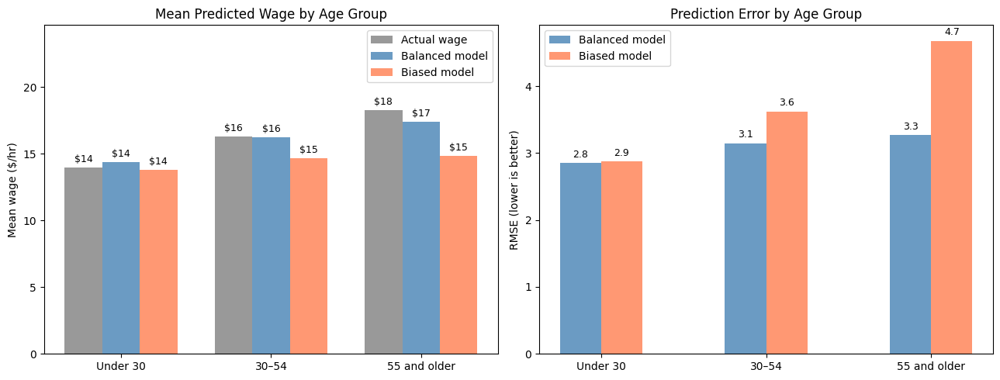

2. Sampling Bias#
What is Sampling Bias?#
Imagine you want to study reading habits across an entire city, so you hand out surveys at the public library. Almost everyone you meet reads regularly, your data looks great! But when you use those results to predict reading habits citywide, your model will be overconfident, because you only asked people who were already at the library. People who never go to libraries were invisible in your data.
This is sampling bias: when the data used to train a model does not accurately represent the real-world population the model will later be applied to. Some groups appear more often than they should (overrepresented), while others barely show up (underrepresented). The model learns the patterns of the majority group well, but it struggles when it encounters the groups it rarely saw during training.
In this tutorial, we try to predict a worker’s exact hourly wage from their education, work experience, weekly hours, and tenure. We train one model on a representative sample of all age groups, and a second on data that contains only young workers. Because experience is the main driver of wages and young workers have little of it, the biased model never learns what high-experience workers look like. When it encounters them at test time, it severely under-predicts their wages.
The True Population#
Before introducing any bias, let’s look at the wage distribution across age groups. Experience accumulates with age, and since experience is the main driver of wages in our model, older workers earn substantially more on average.

Mean wages in the full population:
Under 30 : $13.8/hr (n=1226)
30–54 : $16.2/hr (n=2721)
55 and older : $18.2/hr (n=1053)
The three distributions are clearly separated: young workers cluster around $14/hr, middle-aged workers around $16/hr, and older workers above $18/hr. A model that has only seen young workers will have no idea that wages can reach these levels.
Creating a Biased Sample#
We now create a biased training set by keeping all young workers but none of the middle-aged and older workers. This simulates a data collection scenario such as an online survey that only reached early-career professionals.
df_biased_train = make_biased_sample(df_full_train, keep_fraction=KEEP_FRACTION)
print("Training set composition before and after sampling bias")
print("=" * 60)
print(f"{'Age group':<18} {'Original':>10} {'Biased':>8} {'% kept':>8}")
print("-" * 60)
for g in GROUP_ORDER:
orig = (df_full_train['age_group'] == g).sum()
bias = (df_biased_train['age_group'] == g).sum()
pct = 100 * bias / orig if orig > 0 else 0
print(f"{g:<18} {orig:>10} {bias:>8} {pct:>7.0f}%")
print(f"\nMean wage in balanced training: ${df_full_train['wage'].mean():.1f}/hr")
print(f"Mean wage in biased training: ${df_biased_train['wage'].mean():.1f}/hr")
Training set composition before and after sampling bias
============================================================
Age group Original Biased % kept
------------------------------------------------------------
Under 30 868 868 100%
30–54 1884 0 0%
55 and older 748 0 0%
Mean wage in balanced training: $16.0/hr
Mean wage in biased training: $13.8/hr

The biased set contains only young workers. Its mean wage is around $12/hr. The model trained on this data will never learn that wages can reach $20–30/hr.
Training Two Models#
We use a decision tree regressor: a model that learns if-then rules to predict a numerical outcome. For example: “Does this worker have more than 15 years of experience? If yes, predict a higher wage.” Each rule is learned purely from the training examples the model has seen. Crucially, a decision tree does not guess beyond its training range: if it has only ever seen workers earning $10–20/hr, it has no basis for predicting $25/hr for anyone. Other models might be more flexible and able to extrapolate the wages using factors like work experience, but they would still struggle to learn the correct patterns just from young workers alone.
Balanced model: trained on the full, representative training set
Biased model: trained only on young workers (no middle-aged or older workers)
Both models are then tested on the same test set, which reflects the true age distribution of the population.
# Balanced model. Sees all age groups in their true proportions
tree_balanced = DecisionTreeRegressor(max_depth=4, random_state=42)
tree_balanced.fit(df_full_train[feature_cols], df_full_train['wage'])
# Biased model trained on young workers only
tree_biased = DecisionTreeRegressor(max_depth=4, random_state=42)
tree_biased.fit(df_biased_train[feature_cols], df_biased_train['wage'])
# Store predictions as new columns in the test table
df_test['pred_balanced'] = tree_balanced.predict(df_test[feature_cols])
df_test['pred_biased'] = tree_biased.predict(df_test[feature_cols])
# Overall RMSE: average prediction error (lower is better)
print(f"Overall prediction error RMSE (lower is better):")
print(f" Balanced model: {rmse(df_test['wage'], df_test['pred_balanced']):.2f} $/hr")
print(f" Biased model: {rmse(df_test['wage'], df_test['pred_biased']):.2f} $/hr")
print()
print(f"Mean predicted wage vs actual:")
print(f" Actual: ${df_test['wage'].mean():.1f}/hr")
print(f" Balanced model: ${df_test['pred_balanced'].mean():.1f}/hr")
print(f" Biased model: ${df_test['pred_biased'].mean():.1f}/hr <-- underestimates the wages")
Overall prediction error RMSE (lower is better):
Balanced model: 3.11 $/hr
Biased model: 3.71 $/hr
Mean predicted wage vs actual:
Actual: $16.1/hr
Balanced model: $16.0/hr
Biased model: $14.5/hr <-- underestimates the wages
The biased model’s overall error is much larger. But the overall number hides who the model is getting wrong.
How Each Group Is Predicted#
For each age group we compare the actual mean wage, the balanced model’s prediction, and the biased model’s prediction.
print(f"{'Age group':<18} {'Actual':>10} {'Balanced':>10} {'Biased':>8} {'Biased RMSE':>12}")
print("-" * 62)
for g in GROUP_ORDER:
subset = df_test[df_test['age_group'] == g]
actual = subset['wage'].mean()
balanced = subset['pred_balanced'].mean()
biased = subset['pred_biased'].mean()
err = rmse(subset['wage'], subset['pred_biased'])
print(f"{g:<18} ${actual:>8.1f} ${balanced:>8.1f} ${biased:>6.1f} {err:>11.2f} $/hr")
Age group Actual Balanced Biased Biased RMSE
--------------------------------------------------------------
Under 30 $ 14.0 $ 14.4 $ 13.8 2.87 $/hr
30–54 $ 16.3 $ 16.2 $ 14.6 3.62 $/hr
55 and older $ 18.2 $ 17.4 $ 14.8 4.68 $/hr

The balanced model (blue) closely tracks actual wages for all three groups. The biased model (coral) is stuck near the young-worker wage level for everyone: it has never encountered high-experience workers and therefore has no way to predict that their wages can be $20–30/hr. The older the group, the larger the error.
Interactive Explorer#
How much does the degree of underrepresentation matter? Use the slider to control what fraction of middle-aged and older workers are kept in the training data, then click Train & Evaluate to see how the predictions change.
100 %: no bias, fully representative training data
5 %: severe bias, young workers dominate
0 %: extreme: only young workers (model predicts young-worker wages for everyone)
slider = widgets.IntSlider(
value=0, min=0, max=100, step=5,
description='Keep % of middle/older:',
style={'description_width': 'initial'},
layout=widgets.Layout(width='450px'),
continuous_update=False,
)
button = widgets.Button(description='Train & Evaluate', button_style='primary',
icon='play', layout=widgets.Layout(width='200px', height='36px'))
output_area = widgets.Output()
def run_experiment(_):
keep = slider.value / 100.0
with output_area:
clear_output(wait=True)
df_b = make_biased_sample(df_full_train, keep_fraction=keep)
tree = DecisionTreeRegressor(max_depth=4, random_state=42)
tree.fit(df_b[feature_cols], df_b['wage'])
results = df_test[['age_group', 'wage']].copy()
results['pred'] = tree.predict(df_test[feature_cols])
print(f"Keep fraction: {int(keep*100)}% | Training size: {len(df_b)} "
f"| Mean wage in training: ${df_b['wage'].mean():.1f}/hr")
print("=" * 62)
print(f"{'Age group':<18} {'Actual':>10} {'Balanced':>10} {'This model':>12} {'RMSE':>8}")
print("-" * 62)
for g in GROUP_ORDER:
sub = results[results['age_group'] == g]
actual = sub['wage'].mean()
balanced = df_test[df_test['age_group'] == g]['pred_balanced'].mean()
pred = sub['pred'].mean()
err = rmse(sub['wage'], sub['pred'])
print(f"{g:<18} ${actual:>8.1f} ${balanced:>8.1f} ${pred:>10.1f} {err:>7.2f} $/hr")
fig, axes = plt.subplots(1, 2, figsize=(13, 4))
x = np.arange(len(GROUP_ORDER))
width = 0.25
ra = [df_test[df_test['age_group'] == g]['wage'].mean() for g in GROUP_ORDER]
rb = [df_test[df_test['age_group'] == g]['pred_balanced'].mean() for g in GROUP_ORDER]
rm = [results[results['age_group'] == g]['pred'].mean() for g in GROUP_ORDER]
axes[0].bar(x - width, ra, width, label='Actual', color='gray', alpha=0.8)
axes[0].bar(x, rb, width, label='Balanced model', color='steelblue', alpha=0.8)
axes[0].bar(x + width, rm, width, label='This model', color='coral', alpha=0.8)
axes[0].set_ylabel('Mean wage ($/hr)')
axes[0].set_title(f'Mean Predicted Wage (keep = {int(keep*100)}%)')
axes[0].set_xticks(x)
axes[0].set_xticklabels(GROUP_ORDER)
axes[0].legend()
rmse_b = [rmse(df_test[df_test['age_group'] == g]['wage'],
df_test[df_test['age_group'] == g]['pred_balanced']) for g in GROUP_ORDER]
rmse_m = [rmse(results[results['age_group'] == g]['wage'],
results[results['age_group'] == g]['pred']) for g in GROUP_ORDER]
axes[1].bar(x - width/2, rmse_b, width, label='Balanced model', color='steelblue', alpha=0.8)
axes[1].bar(x + width/2, rmse_m, width, label='This model', color='coral', alpha=0.8)
axes[1].set_ylabel('RMSE ($/hr)')
axes[1].set_title(f'Prediction Error by Age Group (keep = {int(keep*100)}%)')
axes[1].set_xticks(x)
axes[1].set_xticklabels(GROUP_ORDER)
axes[1].legend()
plt.tight_layout()
plt.show()
button.on_click(run_experiment)
display(widgets.VBox([slider, button, output_area]))
Key Observations#
The overall error hides the problem: the biased model looks reasonably accurate overall, because it is correct about the many young workers in the test set. Only group-level evaluation reveals how badly it fails for older workers.
The biased model is stuck at young-worker wages: trained only on workers earning \(10–16/hr, the model's predictions are capped near that range. When it encounters a 50-year-old with 25 years of experience, it predicts around \)12–14/hr, even though the actual wage is closer to $22/hr.
Older workers are hit hardest: the further an age group is from the training data, the larger the prediction error. The 55+ group, which earns the most, suffers the greatest under-prediction.
More young data makes it worse: adding more young workers to the training set would increase the bias, not reduce it. What matters is who is in the data, not just how large the dataset is.
The slider shows the tipping point: use the interactive explorer above to find at what keep percentage the biased model starts to behave like the balanced one. Notice how quickly predictions improve as even a small fraction of older workers is added back.